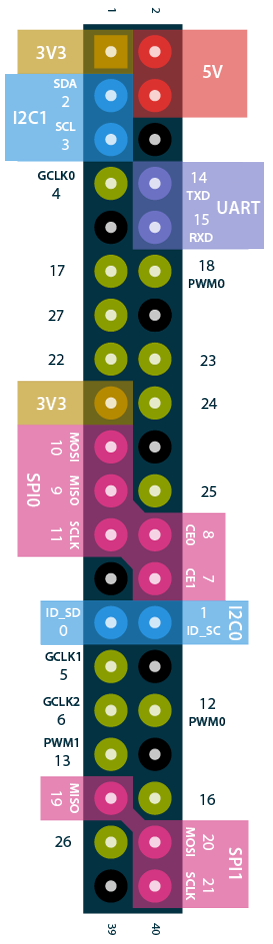

<!--
  Generated template for the Monitor page.

  See http://ionicframework.com/docs/v2/components/#navigation for more info on
  Ionic pages and navigation.
-->
<ion-header>

    <ion-navbar color="secondary">
        <button ion-button menuToggle>
            <ion-icon name="menu"></ion-icon>
        </button>
        <ion-title>monitor</ion-title>
    </ion-navbar>
    <!--<link rel="stylesheet" href="../../www/styles/circle.css">-->
</ion-header>


<ion-content padding>

    <div padding>
        <ion-segment [(ngModel)]="totalstatus">
            <ion-segment-button value="all">
                All
            </ion-segment-button>
            <ion-segment-button value="puppies">
                Basic
            </ion-segment-button>
            <ion-segment-button value="a">
                RAM
            </ion-segment-button>

            <ion-segment-button value="c">
                NETWORK
            </ion-segment-button>
            <ion-segment-button value="gpio">
                GPIO
            </ion-segment-button>
        </ion-segment>
    </div>

    <div [ngSwitch]="totalstatus">

        <div *ngSwitchCase="'all'">
            <ion-grid padding text-center class="item item-icon-left" ng-click="">
                <ion-row responsive-sm>
                    <ion-col width-30>
                        <i class="fa fa-home"></i>
                        <font face="verdana" font size="4" color="#00ccff">Hostname : {{status.basic.hostname}}</font>
                    </ion-col>
                    <ion-col width-70>
                        <font size="2" color="blue" font size="3">Uptime : {{status.basic.date}}</font>
                    </ion-col>
                </ion-row>
                <ion-grid wrap>
                    <ion-row responsive>
                        <ion-col width-33>
                            <font size="3" color="red">Memory</font>
                            <!--<div class="c100 p{{status.physical.cpu.cpu_usage.id}} green">
                                <span>{{status.physical.ram.used*100/status.physical.ram.total | number: 0 }}%</span>
                                <div class="slice">
                                    <div class="bar"></div>
                                    <div class="fill"></div>
                                </div>
                            </div>-->
                            <div class="c100 p{{(status.physical.ram.used/100)}}">
                                <span>{{status.physical.ram.used/100}}%</span>
                                <div class="slice">
                                    <div class="bar"></div>
                                    <div class="fill"></div>
                                </div>
                            </div>

                            <font size="2" color="red">
                                <i class="fa fa-tasks" aria-hidden="true" color="primary"></i> Free:
                            </font>

                            <font size="2" color="red">Used:</font><br/>

                        </ion-col>

                        <ion-col width-33>
                            <font size="3" color="red">Progress</font>
                            <div class="c100 p{{100-status.physical.cpu.cpu_usage.id | number}} green">
                                <span>{{100-status.physical.cpu.cpu_usage.id | number}}%</span>
                                <div class="slice">
                                    <div class="bar"></div>
                                    <div class="fill"></div>
                                </div>
                            </div>
                            <font size="2" color="red">max:{{status.physical.cpu.max}}</font>
                        </ion-col>

                        <ion-col width-33 (click)="presentActionSheet()">
                            <font size="3" color="red">Storage</font>
                            <div class="col-xs-4 col-md-3 box-circle">
                                <div class="progress-circle progress-{{status.physical.harddisk.use_percent}}">
                                    <span>{{status.physical.harddisk.use_percent}}</span>
                                </div>
                            </div>
                            <font size="2" color="red">Free : {{status.physical.harddisk.avail}} MB</font>
                            <br>
                            <font size="2" color="red">Used : {{status.physical.harddisk.used}} GB</font>
                            <br>
                            <font size="2" color="red">Total : {{status.physical.harddisk.size}} GB</font>
                        </ion-col>
                    </ion-row>
                </ion-grid>


            </ion-grid>
            <!--</div>-->

            <!--<div class="item item-icon-left" ng-click="">
        <div class="row" >
            <div class="col" align="middle">
                <i class="fa fa-home"></i>
                <font face="verdana" color="green">hostname : {{status.basic.hostname}}</font>
            </div>
            <div class="col">
                <font size="3" color="blue">uptime : {{status.basic.date}}</font>
            </div>
        </div>
    </div>-->


            <div class="item item-icon-left" ng-click="btncluster('basic.voltage')">
                <div class="pic" style="position:relative">
                    <div class="ip">
                        <i class="fa fa-globe" style="font-size: 20px !important;"></i> IP : {{status.network.eth0.ip}}
                    </div>

                    <i class="fa fa-wif" style="font-size: 50px !important;"></i>
                </div>
            </div>

            <ion-grid wrap responsive-sm>
                <ion-row>
                    <ion-col width-33>Data</ion-col>
                    <ion-col width-33><i class="fa fa-download" aria-hidden="true"></i> {{status.network.eth0.rx_packet}}
                    </ion-col>
                    <ion-col width-33><i class="fa fa-upload" aria-hidden="true"></i> {{status.network.eth0.tx_packet}}
                    </ion-col>
                </ion-row>
                <ion-row>
                    <ion-col width-33> Speed</ion-col>
                    <ion-col width-33><i class="fa fa-download" aria-hidden="true"></i> {{status.network.eth0.rx_packet}} KB/s</ion-col>
                    <ion-col width-33><i class="fa fa-upload" aria-hidden="true"></i> {{status.network.eth0.tx_packet}} KB/s</ion-col>
                </ion-row>

            </ion-grid>

            <!--<div>
                <div class="progress">
                    <div class="progress-bar progress-bar-success" role="progressbar" style="width:40%">
                        Free Space
                    </div>
                    <div class="progress-bar progress-bar-warning" role="progressbar" style="width:10%">
                        Used
                    </div>
                    <div class="progress-bar progress-bar-danger" role="progressbar" style="width:20%">
                        Avail
                    </div>
                </div>
            </div>-->
            <!--<progress id="progress1" max="100" </progress>-->


        </div>
        <div *ngSwitchCase="'gpio'">
            
        </div>

    </div>


</ion-content>